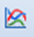

Графики
Инструмент Построить график предназначен для построения графиков с демонстрацией изменений показателей в указанной пользователем точке. Аналогичен действию кнопки управления  на панели главного меню.